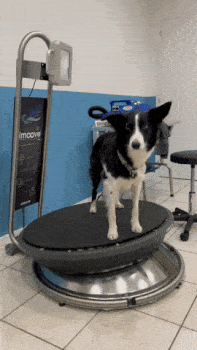
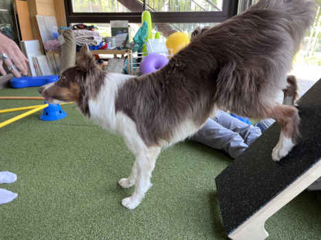
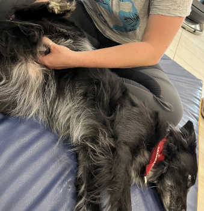

En quoi consiste la physiothérapie?
La physiothérapie vétérinaire est une discipline règlementée qui rassemble plusieurs techniques qui permettent d'établir un diagnostic et de traiter les troubles locomoteurs de l'animal.
Ces techniques font parfois appel à des instruments thérapeutiques.
L’eau, le chaud, le froid, la photobiomodulation ainsi que les outils de musculation et de proprioception sont utilisés afin d’améliorer le bien-être de votre animal.
L'utilisation de ces techniques, personnalisée en fonction des besoins de votre animal, permet de:
- diminuer la douleur,
- limiter les effets de l’inflammation,
- restaurer une mobilité altérée,
- améliorer la cicatrisation, ou encore
- stimuler le système nerveux.
Quelles espèces peuvent être soignées?
Tous les animaux peuvent bénéficier de soins de physiothérapie.
Les équipements du cabinet sont adaptés aux chiens, chats, et nouveaux animaux de compagnie.
Les chevaux pourront bénéficier de soins à domicile comme:
- l’électrostimulation,
- le laser thérapeutique, ainsi que
- toutes les techniques manuelles.
Quels sont les troubles locomoteurs concernés?
L'objectif de la physiothérapie est de restaurer la mobilité altérée d'un animal suite à:
-
une atteinte musculo-squelettique,
Liste non exhaustive- tendinite
- entorse
- arthrose
- rupture des ligaments croisés
- luxation de rotule
- fracture
- ...
-
une atteinte neurologique,
Liste non exhaustive- parésie
- paralysie
- hernie discale
- instabilité vertébrale
- myélopathie
- AVC
- embolie fibro-cartilagineuse
- ...
-
chirurgie orthopédique ou neurologique , ou encore au
-
vieillissement de l’animal, mais aussi
Liste non exhaustive- arthrose
- raideur
- amyotrophie
- dégénérescence neurologique
- dysplasie
- ...
-
des troubles métaboliques
Liste non exhaustive- obésité
- ...
Comment se passe la prise en charge?
La physiothérapie vétérinaire est une discipline réglementée, soumise aux règles établies par l’Ordre des Vétérinaires.
La prise en charge commence obligatoirement par une consultation avec examens clinique, orthopédique et neurologique complets.
Cette consultation permettra la mise en place du protocole de soins le plus adapté à votre animal:
- Des soins physiothérapeutiques dispensés dans le cabinet(voir plus bas).
- Des soins à domicile, à réaliser par vous-même (en fonction de votre temps et de votre capacité à les effectuer).
Ces soins à domicile sont importants, ils permettent d’accélérer la récupération locomotrice de votre animal.
Quelles méthodes peuvent être utilisées?
Cliquez sur les flèches pour plus d'informations.-
Hydrothérapie (soin par l'eau)
Principe et Bienfaits
-
Lorsqu'un animal est immergé jusqu'au niveau de ses hanches, la poussée d'Archimède permet de diviser son poids par 3.
Il fournit donc moins d'efforts pour supporter son corps. Ses mouvements sont de fait beaucoup plus simples.
Chez certains chiens paralysés, nous pouvons voir apparaître des petits mouvements non visibles hors de l’eau.
- La résistance de l'eau permet à l'animal de développer beaucoup plus amplement ses mouvements et d’effectuer un effort musculaire plus important que dans l’air, ce qui permet de maintenir et aussi d'améliorer la musculature et l’amplitude articulaire.
Espèces Concernées
Chat Chien NACIndications
- Troubles:
- musculo-squelettiques
- neurologiques
- métaboliques
- Entrainement, optimisation ou récupération pour les chiens sportifs.

-
-
Photobiomodulation (laser thérapeutique)
Principe et Bienfaits
La laser amplifie la lumière et produit un faisceau de photons parallèles.
L'utilisation thérapeutique de ce faisceau permet une stimulation cellulaire qui a principalement des effets antalgiques, anti-inflammatoires, anti-œdémateux ou encore cicatrisants.Espèces Concernées
Chat Chien Cheval NACIndications
- Affections du système locomoteur
- Retard de cicatrisation(osseuse ou cutanée par exemple)

-
Électrostimulation (stimulation par l'électricité)
Principe et Bienfaits
Les fibres nerveuses utilisent naturellement l'électricité afin de communiquer des informations sensorielles ou neuro-musculaires entre le corps et le cerveau.
La stimulation contrôlée de ces fibres a des effets bénéfiques différents en fonction du type de fibre :
- Sensorielle : réduction de la douleur, notamment très tôt après les opérations.
- Musculaire : combattre l'amyotrophie en contractant les muscles d'un animal inapte à le faire seul.
En plus des soins dans le cabinet, un appareil est disponible à la location afin que vous réalisiez les soins à domicile.
Espèces Concernées
Chat Chien Cheval NACIndications
- Après une opération de chirurgie orthopédique ou neurologique,
- Lutter contre la fonte musculaire,
- En cas de douleur neurologique ou orthopédique,
- Renforcement musculaire lorsque les mouvements sont impossibles.

-
Proprioception (perception de son propre corps et mouvements)
Principe et Bienfaits
La proprioception est la perception, consciente ou non, de la position des différentes parties de son corps.
Espèces Concernées
Chat Chien NACIndications
- Gériatrie : gains en mobilité et vitalité
- Rééducation (faisant suite à une opération ou non)
- Chiens sportifs
- Bien être
 -
Kinésithérapie (soin par le mouvement)
Principe et Bienfaits
La kinésithérapie emploie le mouvement dans le but de renforcer, maintenir ou rétablir les capacités fonctionnelles.
Espèces Concernées
Chat Chien NACIndications
- Renforcement musculaire,
- Après une opération de chirurgie orthopédique ou neurologique,
- Rééducation fonctionnelle suite à des pathologies non opérées,
- Gériatrie si l'animal en est capable.
 -
Massothérapie (soin par le massage)
Principe et Bienfaits
Les massages et étirements ont un effet décontracturant et permettent également de soulager des tensions musculaires.
La mobilisation passive des articulations permet de:
- limiter l’ankylose en cas d'immobilisation
- préserver les sensations nerveuses, ou encore
- d’améliorer la cicatrisation en stimulant la circulation sanguine.
Ces techniques s’effectuent au cabinet, et éventuellement à la maison après une démonstration.
Espèces Concernées
Chat Chien Cheval NACIndications
- Pathologie neurologique,
- Après une opération de chirurgie orthopédique ou neurologique,
- Gériatrie,
- Bien-être.
